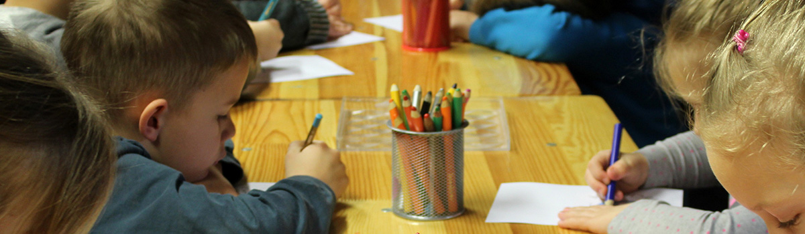

사회공헌시스템
유한양행이 창출하는 이익의 상당 부분은 구조적으로 우리 사회에 환원되도록 시스템화 되어있는 것입니다.
유일한 박사는 1971년 영면하시며 전재산을 유한재단과 유한학원에 기증하였습니다. 이를 통해 자연스럽게 유한양행의 최대 주주는 공익재단이 되었으며, 이 두 기관은 매년 안정적 배당 수익으로 고유 목적사업을 수행하며, 사회에 기여하고 있습니다. 유한양행이 창출하는 이익의 상당 부분은 구조적으로 우리 사회에 환원되도록 시스템화 되어있는 것입니다. 또한 회사는 창업정신 계승과 기업비전 달성을 목표로 다양한 사회공헌 사업을 전개하고 있으며, 사회에 기여하는 인재 양성을 위해 실천적 자원봉사 문화 구축에도 앞장서고 있습니다.
-
- 사회환원
- 지배구조를 통한 기업 이윤의 사회환원 시스템화
- 고배당으로 최대주주 (공익재단) 공익사업 전개
- 사회공헌
- 자원봉사를 바탕으로 사회공헌 사업 전개
- 건강, 지역사회, 교육을 테마로 사업 진행
- 자원봉사
- 임직원 봉사단 운영, 자원봉사 활동 지원 강화
- 다양한 봉사 및 기부프로그램 운영